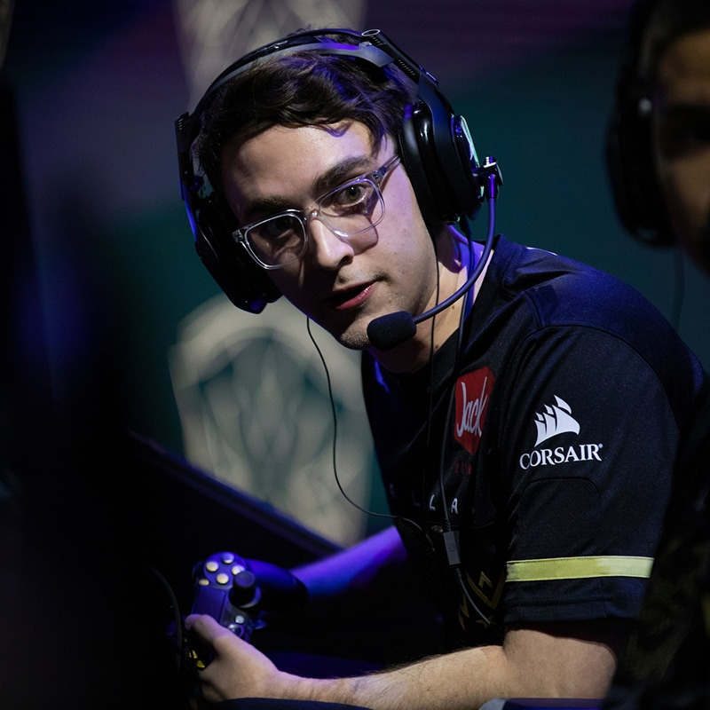

James "Clayster" Eubanks is a Call of Duty esports player, currently a player for New York Subliners.
He is a 2015, 2019, and 2020 World Champion, and the 2015 World Championship MVP.
CLayster has placed number 1 in many tournaments such as:

Clayster's stats